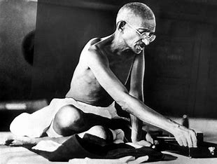
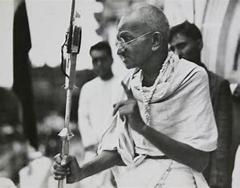
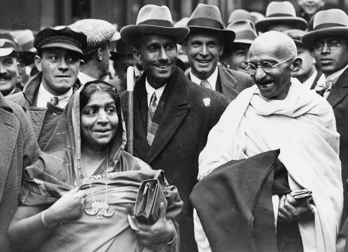
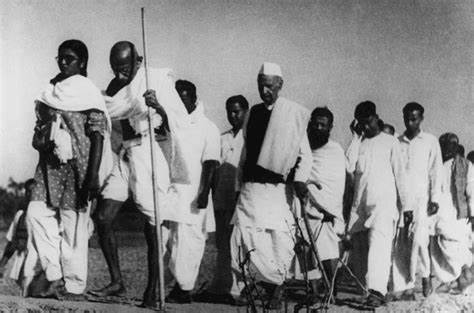
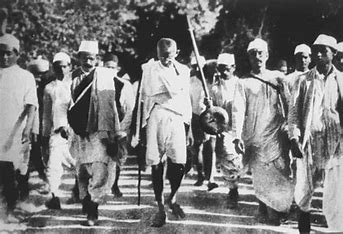
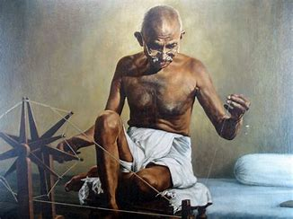
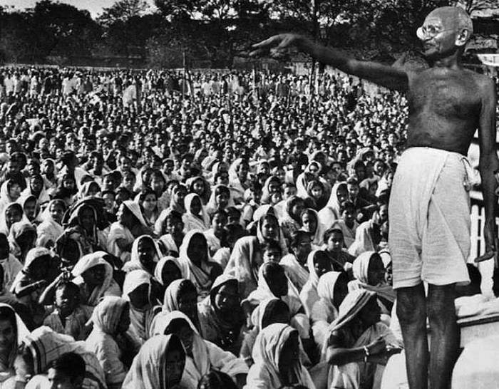
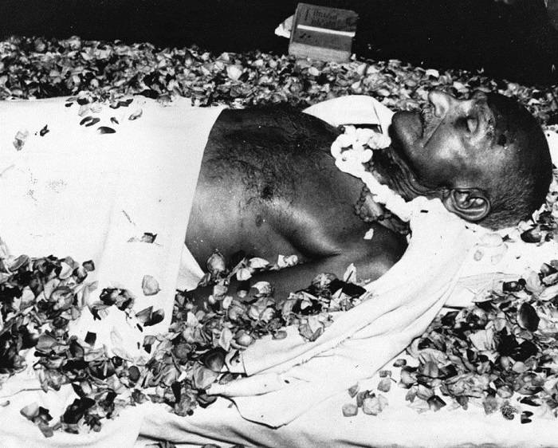

Mohandas Karamchand Gandhi was an eminent freedom activist and an influential political leader who played a dominant role in India's struggle for independence. Gandhi is known by different names, such as Mahatma (a great soul), Bapuji (endearment for father in Gujarati) and Father of the Nation. Every year, his birthday is celebrated as Gandhi Jayanti, a national holiday in India, and also observed as the International Day of Nonviolence. Mahatma Gandhi, as he is most commonly referred to, was instrumental in liberating India from the clutches of the British. With his unusual yet powerful political tools of Satyagraha and non-violence, he inspired several other political leaders all over the world including the likes of Nelson Mandela, Martin Luther King Jr and Aung San Suu Kyi. Gandhi, apart from helping India triumph in its fight for independence against the English, also led a simple and righteous life, for which he is often revered. Gandhi's early life was pretty much ordinary, and he became a great man during the course of his life. This is one of the main reasons why Gandhi is followed by millions, for he proved that one can become a great soul during the course of one’s life, should they possess the will to do so.
" "After his long stay in South Africa and his activism against the racist policy of the British, Gandhi had earned the reputation as a nationalist, theorist and organiser. Gopal Krishna Gokhale, a senior leader of the Indian National Congress, invited Gandhi to join India’s struggle for independence against the British Rule. Gokhale thoroughly guided Mohandas Karamchand Gandhi about the prevailing political situation in India and also the social issues of the time. He then joined the Indian National Congress and before taking over the leadership in 1920, headed many agitations which he named Satyagraha.
The Champaran agitation in 1917 was the first major success of Gandhi after his arrival in India. The peasants of the area were forced by the British landlords to grow Indigo, which was a cash crop, but its demand had been declining. To make the matters worse, they were forced to sell their crops to the planters at a fixed price. The farmers turned to Gandhiji for help. Pursuing a strategy of nonviolent agitation, Gandhi took the administration by surprise and was successful in getting concessions from the authorities. This campaign marked Gandhi’s arrival in India!
" "During the period of 1920s, Mahatma Gandhi concentrated on resolving the wedge between the Swaraj Party and the Indian National Congress. In 1927, British had appointed Sir John Simon as the head of a new constitutional reform commission, popularly known as ‘Simon Commission’. There was not even a single Indian in the commission. Agitated by this, Gandhi passed a resolution at the Calcutta Congress in December 1928, calling on the British government to grant India dominion status. In case of non-compliance with this demand, the British were to face a new campaign of non-violence, having its goal as complete independence for the country. The resolution was rejected by the British. The flag of India was unfurled by the Indian national Congress on 31st December 1929 at its Lahore session. January 26, 1930 was celebrated as the Independence Day of India.But the British failed to recognize it and soon they levied a tax on salt and Salt Satyagraha was launched in March 1930, as an opposition to this move. Gandhi started the Dandi March with his followers in March, going from Ahmedabad to Dandi on foot. The protest was successful and resulted in the Gandhi-Irwin Pact in March 1931.
" "As the World War II progressed, Mahatma Gandhi intensified his protests for the complete independence of India. He drafted a resolution calling for the British to Quit India. The 'Quit India Movement' or the 'Bharat Chhodo Andolan' was the most aggressive movement launched by the Indian national Congrees under the leadership of Mahatma Gandhi. Gandhi was arrested on 9th August 1942 and was held for two years in the Aga Khan Palace in Pune, where he lost his secretary, Mahadev Desai and his wife, Kasturba. The Quit India Movement came to an end by the end of 1943, when the British gave hints that complete power would be transferred to the people of India. Gandhi called off the movement which resulted in the release of 100,000 political prisoners.
"The inspiring life of Mahatma Gandhi came to an end on 30th January 1948, when he was shot by a fanatic, Nathuram Godse, at point-blank range. Nathuram was a Hindu radical, who held Gandhi responsible for weakening India by ensuring the partition payment to Pakistan. Godse and his co-conspirator, Narayan Apte, were later tried and convicted. They were executed on 15th November 1949.
"